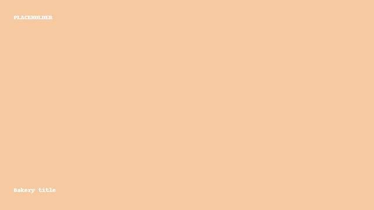
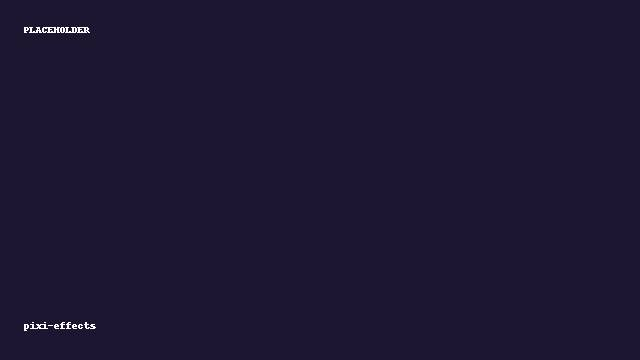
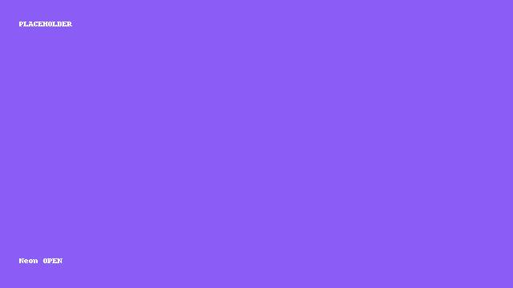
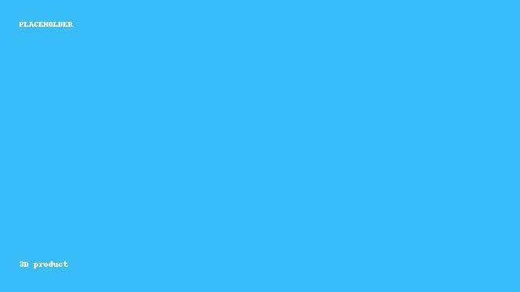
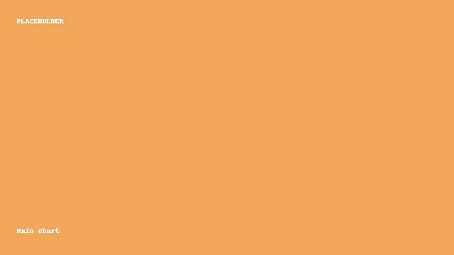
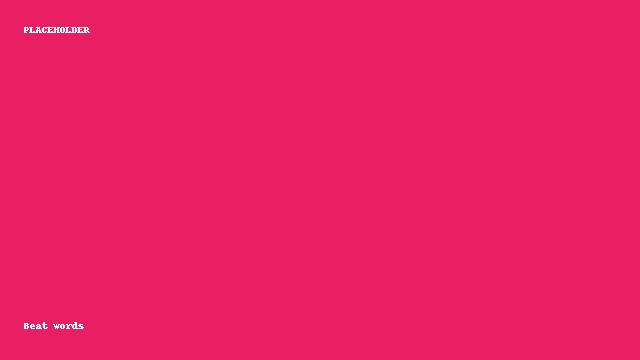
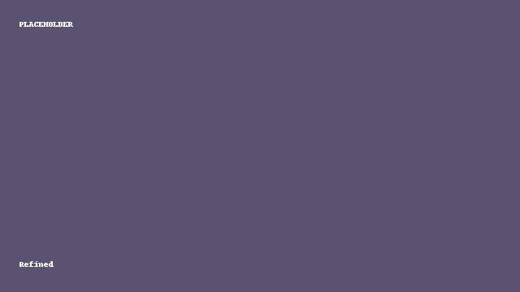

Use https://github.com/yjmtmtk/pixi-effects to make a video: a 10-second title for a bakery, warm cream colours, a soft chime at the end.
- Claude Opus
- 1 message
- 3 min
- unedited
Tell your AI what you want to see. It writes the video with pixi-effects, checks every frame, and hands you the MP4.
Use https://github.com/yjmtmtk/pixi-effects to make a video: a 10-second title for a bakery, warm cream colours, a soft chime at the end.
https://github.com/yjmtmtk/pixi-effects を使って動画を作って：縦型 15 秒、夜の街のネオンで「OPEN」が点く、短いジングル付き。
用 https://github.com/yjmtmtk/pixi-effects 做一个视频：一个在 3D 空间里慢慢旋转的产品盒子，柔和的灯光，最后出现品牌名。
Usa https://github.com/yjmtmtk/pixi-effects para hacer un vídeo: un gráfico de barras de las lluvias de cinco ciudades que crece y se ordena.
https://github.com/yjmtmtk/pixi-effects 를 사용해서 영상을 만들어 줘: 음악 비트에 맞춰 네 단어가 튀어나오는 12초짜리 클립.

That is the whole message. An AI with the pixi-effects repository open was asked exactly that, and made the video below. Open your own project and ask the same.

Make a promo video for this project.
Each video is the answer to one message, exactly as it came out. Press play: it runs live, right here.
Use https://github.com/yjmtmtk/pixi-effects to make a video: a 10-second title for a bakery, warm cream colours, a soft chime at the end.

https://github.com/yjmtmtk/pixi-effects を使って動画を作って：縦型 15 秒、夜の街のネオンで「OPEN」が点く、短いジングル付き。

用 https://github.com/yjmtmtk/pixi-effects 做一个视频：一个在 3D 空间里慢慢旋转的产品盒子，柔和的灯光，最后出现品牌名。

Usa https://github.com/yjmtmtk/pixi-effects para hacer un vídeo: un gráfico de barras de las lluvias de cinco ciudades que crece y se ordena.

https://github.com/yjmtmtk/pixi-effects 를 사용해서 영상을 만들어 줘: 음악 비트에 맞춰 네 단어가 튀어나오는 12초짜리 클립.
Start with one sentence, then say what to change. The whole conversation sits next to the result.

Add the skill once:
npx skills add yjmtmtk/pixi-effects
Then ask for a video, in any words. It checks its own work and renders the MP4.
Paste one sentence and say what you want:
Use https://github.com/yjmtmtk/pixi-effects to make a video: …
You get one HTML page. Open it: the download button under the video saves the MP4.
For the curious: a video that is not a file, and the docs an AI reads.